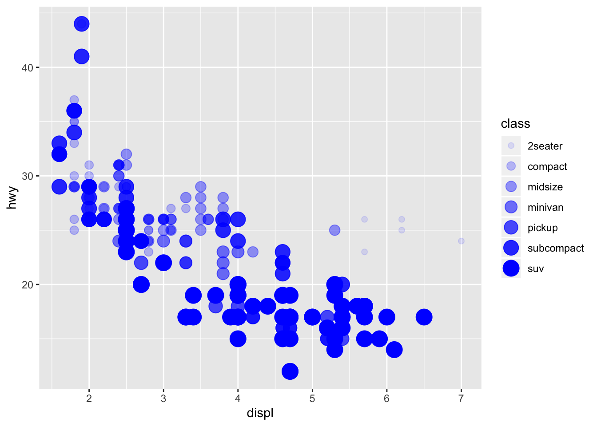

EmoRy Coding Club master document
Matt Malishev*, Desiree De Leon & Hasse Walum
Emory University, 1510 Clifton Road NE, Atlanta, GA, USA, 30322
Emory University, 1510 Clifton Road NE, Atlanta, GA, USA, 30322
Agenda
We’ll use the content from Chapter 3 of the R for Data Science book.
- Loading the tidyverse
- Preview a built-in dataset
- Using ggplot with the built-in data set (to make scatterplots)
- Modifying plot aesthetics
- Reading in outside data
- Plotting outside data with ggplot
Loading the tidyverse
We’ll load the tidyverse– you can think of this as a big conglomeration of packages that give us useful functionality (kind of like downloading apps on our phone, for example).
library(tidyverse)
# We are typing in an R Script. Things with # in front make them comments and notes to ourselves
# Command Return to execute the line/ "run the code"
3.2.1 The mpg data frame
We’ll use a built-in tidyverse dataset called mpg with data about cars and gas-mileage.
- This is a tibble (data frame) that we’ve “printed” out. It’s like R’s version of an excel spreadsheet, but much better.
- A tibble will show us first 10 rows.
Among the variables in mpg are:
displ, a car’s engine size, in litres.hwy, a car’s fuel efficiency on the highway, in miles per gallon (mpg).
# 3.2.2 Creating a ggplot
Run and plot this code first:
This is a plot of the two variables highlighted above.
Now here’s what’s going on:
- ggplot() is creating a coordinate system for us–basically an empty graph (This is Exercise #1 later).
- Now add a “layers”, e.g. geom_point (but there are many for different kinds of graphs). Today, we’re sticking to scatterplots and geom_point.
- This always has a mapping argument. Mapping and
aeswill always go together. Thexandyofaes, is where we specify what variables go on which axis.
3.2.3 A graphing template
We can keep re-using our ggplot code as a template– to create new plots. The next sections will be about how to modify the mappings and aesthetics to visualize different parts of this dataset.
3.2.4 Exercises, 10 minutes (?)
- Run
ggplot(data = mpg). What do you see?
2. How many rows are in mpg? How many columns?
mpg #234 rows, 11 columns, which we know from the tibble output
glimpse(mpg) # Can also do it this way
str(mpg) # or the base r way
3. What does the drvvariable describe? Read the help for ?mpg to find out.
If we print mpg and find drv column, it’s a bunch of weird values. What do they mean? Check the help documentation to find out. ? works because this data set is built-in.
4. Make a scatterplot of hwy vs cyl.
5. What happens if you make a scatterplot of class vs drv? Why is the plot not useful?
3.3 Aesthetic mappings

By adding a 3rd variable to a 2D scatterplot (aka the size, shape, or color of our points). We can change the “Level” of a point’s size, shape, or color. ggplot then chooses an appropriate scale to visualize each of these. For example:
1. Map class to size aesthetic
We get a warning, but this is okay.
- Now try using alpha as the aesthetic:
ggplot(data = mpg) +
geom_point(mapping = aes(x = displ, y = hwy, alpha = class)) # maps classes to different transparencies
3. What happens when you map class to the shape aesthetic?
Any warnings? Yes – because shape maxes out at six levels.
## Manually changing aesthetic properties
But we can set the aesthetic properties manually, instead of having ggplot do the scaling automatically. For example, we can make our ggplot points all blue like this. This time, putting color OUTSIDE the aes argument.
1. Try specifying the color with a [hex code] (https://htmlcolorcodes.com/color-picker/) in quotes.
- What happens if you specify color in two places (i.e. inside AND outside of the
aesargument)?
ggplot(data = mpg) +
geom_point(mapping = aes(x = displ, y = hwy, color = class), color = "#FFFFFF")The inner one is overridden.
3. Extra question: Can you try to generate a plot that looks like this?
## Warning: Using size for a discrete variable is not advised.## Warning: Using alpha for a discrete variable is not advised.
Aesthetics you can manually set:
- The name of a color as a character string.
- The size of a point in mm.
- The shape of a point as a number, as shown in Figure 3.1.

R has 25 built in shapes that are identified by numbers. There are some seeming duplicates: for example, 0, 15, and 22 are all squares. The difference comes from the interaction of the colour and fill aesthetics. The hollow shapes (0–14) have a border determined by colour; the solid shapes (15–18) are filled with colour; the filled shapes (21–24) have a border of colour and are filled with fill.
Here’s an example using a specific shape and size for all points.
3.3.1 Exercises
Try these on your own. 15 min?
1. What’s gone wrong with this code? Why are the points not blue?
2. Which variables in mpg are categorical? Which variables are continuous? (Hint: type ?mpg to read the documentation for the dataset). How can you see this information when you run mpg?
3. Map a continuous variable to color, size, and shape. How do these aesthetics behave differently for categorical vs. continuous variables?
What happens if you map the same variable to multiple aesthetics?
What does the stroke aesthetic do? What shapes does it work with? (Hint: use ?geom_point)
What happens if you map an aesthetic to something other than a variable name, like aes(colour = displ < 5)? Note, you’ll also need to specify x and y.
3.4 Common problems
Make sure that you: * Haven’t put + on the wrong line * Use ( ) and "" in pairs * Make use of ?
Using wild-caught data
The airbnb data set is not a built in data set, so no we can’t use ?dataset help.
Read in data
library(tidyverse) # includes package "readr"
# All Airbnb data (106 cols)
url <- "http://data.insideairbnb.com/united-states/ny/new-york-city/2019-06-02/data/listings.csv.gz"
df_full <- read_csv(url) # reads in data
df <- df_full[df_full$id<1000000,] # subsets ~2k of the ~48k entries based on (arbitrary?) id
df # prints as a tibbleTaking a quick look at the larger data set
- Use glimpse(df) to see a list of all the columns
- Real data has messy entries, e.g. “Williamsburg, Brooklyn” and “Williamsburg bk”
Let’s stick with a smaller data set
# smaller csv file (16 cols)
url <- "http://data.insideairbnb.com/united-states/ny/new-york-city/2019-06-02/visualisations/listings.csv"
df_full <- read_csv(url)## Parsed with column specification:
## cols(
## id = col_double(),
## name = col_character(),
## host_id = col_double(),
## host_name = col_character(),
## neighbourhood_group = col_character(),
## neighbourhood = col_character(),
## latitude = col_double(),
## longitude = col_double(),
## room_type = col_character(),
## price = col_double(),
## minimum_nights = col_double(),
## number_of_reviews = col_double(),
## last_review = col_date(format = ""),
## reviews_per_month = col_double(),
## calculated_host_listings_count = col_double(),
## availability_365 = col_double()
## )## # A tibble: 2,177 x 16
## id name host_id host_name neighbourhood_g… neighbourhood latitude
## <dbl> <chr> <dbl> <chr> <chr> <chr> <dbl>
## 1 2539 Clea… 2787 John Brooklyn Kensington 40.6
## 2 2595 Skyl… 2845 Jennifer Manhattan Midtown 40.8
## 3 3647 THE … 4632 Elisabeth Manhattan Harlem 40.8
## 4 3831 Cozy… 4869 LisaRoxa… Brooklyn Clinton Hill 40.7
## 5 4989 Grea… 7118 New-York… Manhattan Hell's Kitch… 40.8
## 6 5022 Enti… 7192 Laura Manhattan East Harlem 40.8
## 7 5099 Larg… 7322 Chris Manhattan Murray Hill 40.7
## 8 5121 Blis… 7356 Garon Brooklyn Bedford-Stuy… 40.7
## 9 5178 Larg… 8967 Shunichi Manhattan Hell's Kitch… 40.8
## 10 5203 Cozy… 7490 MaryEllen Manhattan Upper West S… 40.8
## # … with 2,167 more rows, and 9 more variables: longitude <dbl>,
## # room_type <chr>, price <dbl>, minimum_nights <dbl>,
## # number_of_reviews <dbl>, last_review <date>, reviews_per_month <dbl>,
## # calculated_host_listings_count <dbl>, availability_365 <dbl>## Observations: 2,177
## Variables: 16
## $ id <dbl> 2539, 2595, 3647, 3831, 4989, 502…
## $ name <chr> "Clean & quiet apt home by the pa…
## $ host_id <dbl> 2787, 2845, 4632, 4869, 7118, 719…
## $ host_name <chr> "John", "Jennifer", "Elisabeth", …
## $ neighbourhood_group <chr> "Brooklyn", "Manhattan", "Manhatt…
## $ neighbourhood <chr> "Kensington", "Midtown", "Harlem"…
## $ latitude <dbl> 40.64749, 40.75362, 40.80902, 40.…
## $ longitude <dbl> -73.97237, -73.98377, -73.94190, …
## $ room_type <chr> "Private room", "Entire home/apt"…
## $ price <dbl> 149, 225, 150, 89, 105, 80, 200, …
## $ minimum_nights <dbl> 1, 1, 3, 1, 4, 10, 3, 45, 2, 2, 1…
## $ number_of_reviews <dbl> 9, 44, 0, 258, 27, 9, 71, 49, 424…
## $ last_review <date> 2018-10-19, 2019-05-07, NA, 2019…
## $ reviews_per_month <dbl> 0.21, 0.38, NA, 4.53, 0.24, 0.10,…
## $ calculated_host_listings_count <dbl> 6, 2, 1, 1, 1, 1, 1, 1, 1, 1, 4, …
## $ availability_365 <dbl> 365, 331, 365, 182, 83, 0, 92, 0,…Use ggplot()
- We’ll do 1 together.
- Create new scatter plots with the data on your own
- Explore at least 3 different variable relationships
- Do 1 version of a presentable ggplot
- Take the same ggplot and make change the aesthetics to make it an ugly ggplot
- Bonus points: copy and paste the following code into one of your existing ggplots as an additional layer to make a very ugly ggplot! Run the plot to see what this produces. Then modify some of the arguments to make the plot look more acceptable!
+
theme(
plot.background = element_rect(fill = "lightyellow"),
plot.title = element_text(size = 30, hjust = 0.25),
plot.subtitle = element_text(size = 20, hjust = 0.75, color = "mediumvioletred", family = "serif"),
plot.caption = element_text(size = 10, face = "italic", angle = 25),
panel.background = element_rect(fill = 'lightblue', colour = 'darkred', size = 4),
panel.border = element_rect(fill = NA, color = "green", size = 2),
panel.grid.major.x = element_line(color = "purple", linetype = 2),
panel.grid.minor.x = element_line(color = "orange", linetype = 3),
panel.grid.minor.y = element_blank(),
axis.title.x = element_text(face = "bold.italic", color = "blue"),
axis.title.y = element_text(family = "mono", face = "bold", size = 20, hjust = 0.25),
axis.text = element_text(face = "italic", size = 15),
axis.text.x.bottom = element_text(angle = 180), # note that axis.text options from above are inherited
strip.background = element_rect(fill = "magenta"),
strip.text.y = element_text(color = "white"),
strip.placement = "outside",
legend.background = element_rect(fill = "orangered4"), # generally will want to match w plot background
legend.key = element_rect(fill = "orange"),
legend.direction = "horizontal",
legend.position = "bottom",
legend.justification = "left",
legend.title = element_text(family = "serif", color = "white"),
legend.text = element_text(family = "mono", face = "italic", color = "limegreen")
) +
labs(title = "test title",
subtitle = "test subtitle",
x = "my x axis",
y = "my y axis",
caption = "this is a caption",
col = "Renamed Legend") # plot neighborhood_group vs price
ggplot(data = df) +
geom_point(mapping = aes(x = neighbourhood_group, y = price, color = neighbourhood_group), shape = 21, stroke = 1)